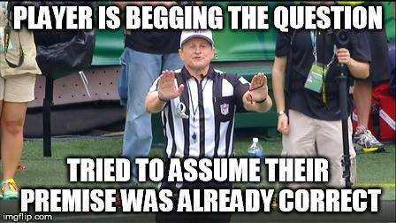
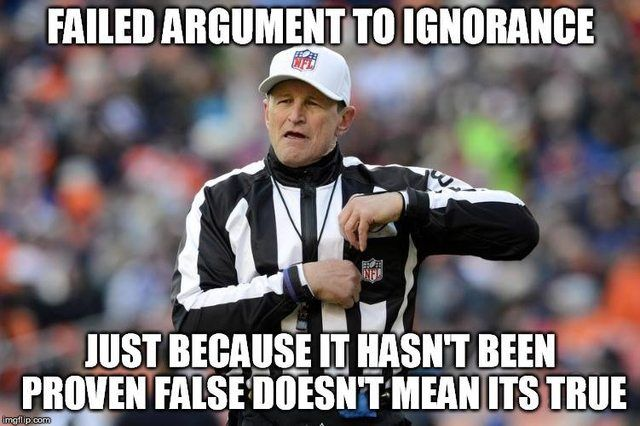
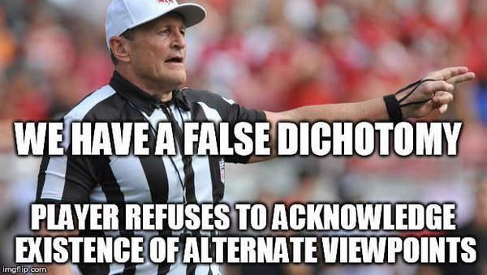
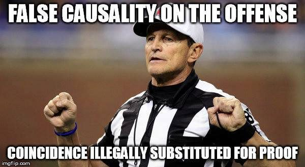

The third set of fallacies we will consider here are those that make presumptions, often in a hidden way. That is, they rely on hidden and unstated assumptions written, as it were, between the lines. This strategy, however, cannot withstand critical analysis since if we can get the perpetrator of such fallacies to acknowledge these hidden presumptions we can see them for what they are, mere assumptions without warrant.
Abortion is just wrong, and that is all there is to it.
This is the simplest and most obvious kind of bad reasoning. As the name implies, mere assertion involves simply stating what you want to establish without presenting any evidence whatsoever to support it. It is truly amazing how often people simply assert something that they may think is true without bothering to offer anything to support this assertion.
You should become a Christian.
This is because the Bible says that if you are not a Christian you will go to Hell.

Glen Welch, fallacy ref
This strange sounding name really applies to a very simple technique. Someone who begs the question is guilty of assuming what they are claiming to establish in their argument. In other words they put a disguised version of their conclusion in the premises of their argument. That is, they are not really arguing for what they claim to be arguing for. This is an example of a fallacy that is nevertheless a valid form of reasoning. The problem here is that we cannot just assume that the conclusion is true, as someone who uses this way of argument is in fact doing. Begging the question is not, of course, always so obvious. We can see that this is a case of begging the question when we realize that the only people who will be convinced by this argument are Christians. Why? Simply because nobody else will take evidence from the Bible seriously, and people who consider the Bible as authoritative are already Christians. This example also shows why begging the question is also known as “preaching to those already converted.”
The claim that the death penalty deters crime has not been established with any certainty.
Thus it is clear that it does not deter crime.

Glen Welch, fallacy ref
The fact that something has not yet been proven to be true does not mean that it is false. It is just unknown! Yet this fallacy assumes that if we do not have proof of something then that thing must be false.
Either living organisms are products of blind chance or they were deliberately designed.
But it makes no sense that something as functionally complex as a living organism is the result of blind chance.
Hence they must have been designed.

Glen Welch, fallacy ref
The argument here rests entirely on an assumption that is not always so easy to see, the assumption that the alternatives stated are the only ones there are. If this were the case, then the argument would stand, but often other alternatives are simply not even mentioned. Hence the dilemma, or choice between two alternatives, is here a false one. In the example below, which is often used against the theory of biological evolution, the missing alternative is precisely what Darwin articulated in his book On the Origin of Species, a theory which contains an element of chance but which is not reducible to the blind chance that this argument presumes is the only alternative to deliberate design.
All three of my ex-wives always told me what to do.
This clearly shows that all women want to control us men all the time.
We may be tempted to conclude a lot from a single case, or a relatively small sample, but this is often merely a way to confirm our prejudices. If we really want to make sweeping generalizations, we’ll have to gather a bit more evidence in less clearly biased ways than this.
If we legalize physician assisted suicide then everyone over sixty had better watch their backs.
This is because once doctors get used to helping people with terminal illnesses die comfortably, they will have less and less of a problem with getting rid of older people in general.
Slippery slope arguments are often used as a way of warning us of the dangers of allowing people to do something that is now forbidden. They say, in effect, if we allow someone to do this, then they’ll have no reason not to do that, which is much worse. The name comes from the metaphor of an icy ski slope: if we are foolish enough to step onto the slope, without skis on of course, we’ll end up uncontrollably sliding down to the bottom. The problem with this argument is that it claims that we must end up where the arguer claims we will, but the argument gives us nothing but the assertion that we will in fact end up there.
The majority of heroin users smoked marijuana when they were younger.
So smoking marijuana must be one of the causes of heroin use.

Glen Welch, fallacy ref
Us humans are very good at noticing patterns in the world around us. In fact science is based on this ability – we notice regularities and then come up with explanations for them. The most powerful of these explanations involve attributing a causal relationship between events that appear to be related to each other in a regular way. We have to be careful here, however, since we also have the tendency to overdo this. This may seem like a convincing argument until we recognize that the fact that something tends to happen before something else is not nearly enough to establish that the first thing causes the second to happen. For example, the fact that my alarm clock goes off every day shortly before sunrise does not mean that my alarm clock causes the sun to rise. The same goes for drug abuse. The fact that I abused marijuana first and then heroin later does not mean that the first caused the second. It is equally possible that I abuse whatever drugs I abuse for another reason – I have major problems I am trying to escape from.
He must be guilty, since he has a guilty look on his face.
Furthermore, the look on his face indicates guilt, because he is the one who did it.
This final fallacy in our list is, in a sense, a more complex version of begging the question. Circular reasoning involves bouncing back and forth between two assumptions each of which is supposed to be the basis for the other. To see the circular structure of the reasoning exhibited here it may help to figure out which statement is the premise and which is the conclusion. In this example, at first glance it seems like the conclusion is “He is guilty,” and this seems to be based on the premise that “He has a guilty look on his face.” However, the fact that the look on his face indicates guilt is then supported by the assertion that “He did it.” Clearly we are moving around in a circle – our premise supports and is supported by our conclusion. There is thus no real support for either and the whole structure is unfounded. This fallacy is also known as the “vicious circle” fallacy.